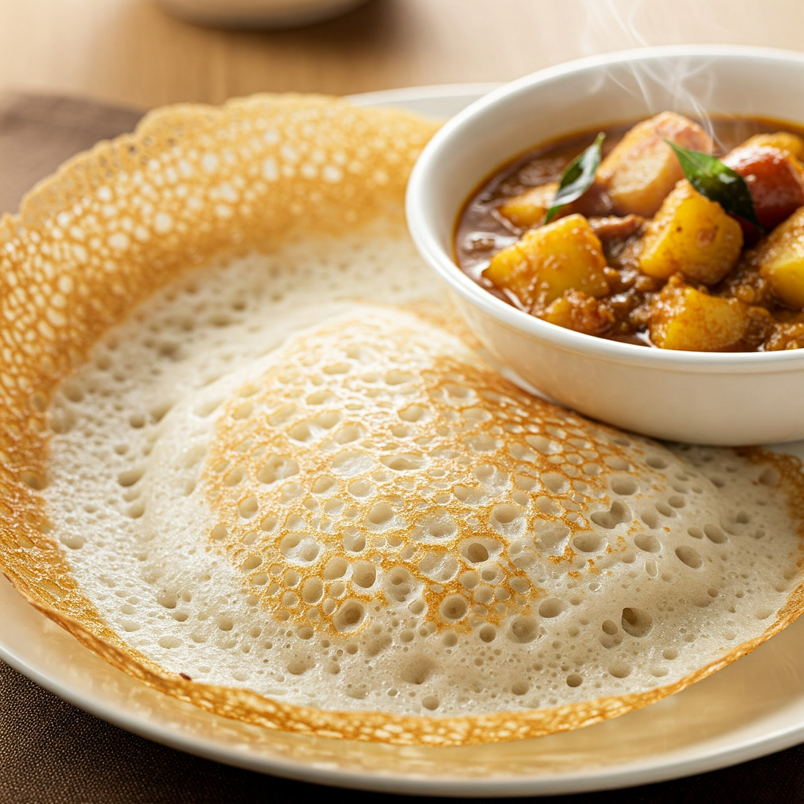
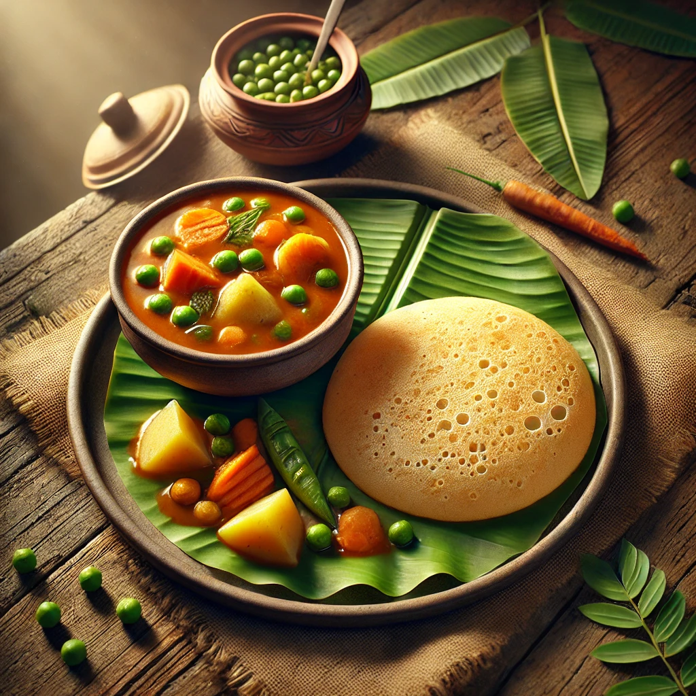
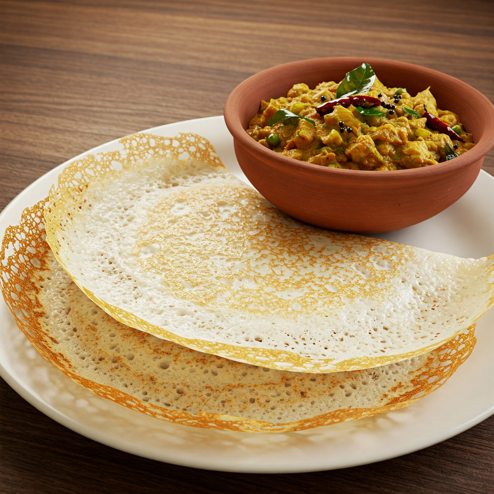

Appam with Stew



Appam with Stew:a classic dish from the southern Indian state
Appam and Stew is a classic dish from the southern Indian state of Kerala.
It consists of appam, a type of pancake made from fermented rice batter and
coconut milk, served alongside a flavorful stew. The appam is characterized
by its soft, spongy center and lacy, crispy edges. The stew is typically
made with coconut milk, vegetables, and spices, and can be vegetarian or
non-vegetarian. This combination of textures and flavors makes Appam and
Stew a popular breakfast and dinner option in Kerala.
The appam batter is fermented overnight, giving it a slightly tangy flavor.
The stew is often cooked with a variety of vegetables, such as potatoes,
carrots, and beans, and can also include meat like chicken or fish.
The richness of the coconut milk in both the appam and the stew creates a
satisfying and comforting dish. Appam and Stew is often enjoyed with a side
of chutneys or pickles, adding another layer of flavor to this classic Kerala meal.
Appam Ingredients
- 1 cup Idli Rice (or short-grain rice)
- ½ cup Cooked Rice
- ¼ cup Grated Coconut
- 1 tsp Dry Yeast
- 1 tsp Sugar
- Salt
- Water
vegetarian stew
- 1 cup Mixed Vegetables (potatoes, carrots, beans, etc.)
- 1 Onion, chopped
- 1 inch Ginger, chopped
- 2-3 Green Chilies, slit
- Curry Leaves
- ½ tsp Turmeric Powder
- 1 tsp Coriander Powder
- ½ tsp Cumin Powder
- ¼ tsp Garam Masala
- 1 cup Thick Coconut Milk
- ½ cup Thin Coconut Milk (optional)
- 2 tbsp Coconut Oil
- Salt
Non-vegetarian Stew
- Add 250-500g Meat/Fish to the Vegetarian Stew ingredients.
Adjust cooking time and spices as needed.
steps
Appam
- Soak rice & cooked rice (4-6 hrs/overnight).
- Grind with coconut to a smooth batter.
- Add yeast, sugar, salt, ferment (8-12 hrs).
- Cook thin pancakes on a greased pan.
Vegetarian stew
- Sauté onion, ginger, chilies, curry leaves.
- Add vegetables, sauté.
- Add spices (turmeric, coriander, cumin).
- Add thin coconut milk (optional), simmer.
- Salt to taste.
- Add thick coconut milk, garam masala, simmer (don't boil).
Non-vegetarian stew
- Marinate meat/fish.
- Sauté onion, ginger, chilies, curry leaves.
- Add meat/fish, sauté.
- Follow vegetarian stew steps,adjust cooking time.